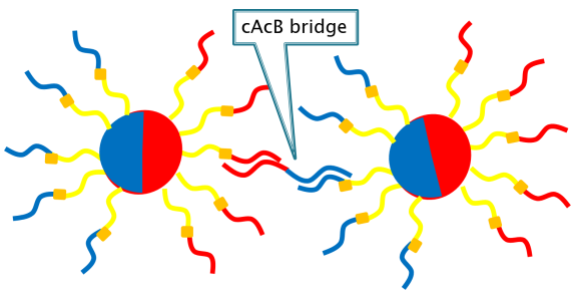

Today, there are some methods for making nanoscale structure. For example, photolithography is often used for making semiconductor device at nanoscale. But they are methods for 2-dimentional structure, and their limit of resolving is about to 10 nm scale. It is still difficult to make nanoscale structure accurately. If we can make 3-dimentional structure in nanoscale optionally, it must be useful in many fields, such as researching chemical reaction and new materials. There are two methods in nanofabrication, Top-down method and Bottom-up method. In Top-down method, expecting object is made from larger material, and in bottom-up method, it is made from smaller materials and materials. We found there is a possibility to break through in bottom-up method, using DNA and mag-beads.
The goal of this project is to create “polychrome DNA beads”. “Polychrome DNA beads” are made from beads and multiple DNA with Carboxyvinyl Uracil (cvU)*1 on each part of surface of bead. Only cvU which are irradiated by UV light can react and DNA strands are fixed on beads. These DNA combine with “bridge DNA”*2 on next bead. So, we will be able to make accurate structure by joining “polychrome DNA beads” by some kind of appropriate “bridge DNA”. 図 There are two benefits of our solution compared with similar prior research.*3 First, in our method, if that material can be attached DNA strand on its surface, any materials of particles can be used for core of “polychrome DNA beads”. Because DNA strand and beads are connected by avidin-viotin bonding. It is so useful because we need different feature as material of nanoscale structure according to its usage. And by changing the size of particles, the scale of structure can be easily determined. (図) Second, only by changing the direction for applying the light, it is possible to control the relative positions of the DNA. This means positions of DNA attached to the particles are not limited to two positions, but to various positions. And we can determine the relative positions of DNA attached to the particles. It makes easy to make angle or curve and it is necessary feature for making 3-dimentional structure.
“Bi-color DNA beads” is basic type of “polychrome DNA beads”. Bi-color means having two colors. To research how to attach several kinds of DNA on one bead, we adopted two DNA version as a model. “Bi-color DNA beads” consist on magnetic beads and two types of DNA (named A and B). To join beads, complementary A and complementary B (cAcB) “DNA bridge” is used. This beads have two kind of DNA, so “bi-color DNA beads” make a straight line, 1-dimentional structure. We use magnetic beads for core of this “bi-color DNA beads”. Because magnetic beads as core have some benefits. Magnetic beads can be localized at specific area by applying a magnetic field to them. So we can raise efficiency of making “bi-color DNA beads”. 
In the experiments, we used 3 micron magnetic beads and well both coated with streptavidin. 3 kinds of DNA are needed to make “bi-color DNA beads”, so we named them Z, A, B respectively.
Our method consists of 3 steps.
First step is to attach Z strand with beads and complementary Z strand with well.
We attach Z strand with biotin at 5’ end to the beads, complimentary Z strand to the well by using the avidin-biotin interaction.
Then put the beads into the well and bind Z strand and complementary Z strand by hybridization.
 Second step is to attach A strand with Z strand on beads.
In a separate tube, we hybridized cAcZ strand and A strand with a cvU. A strand and Z strand do not link just as they are, so we used cAcZ strand as a support.
cvU is that carboxyl vinyl uracil, and a photo reactive base, by irradiating the light of 366nm, and is for connecting the DNA strand that exist nearby.
These A strands with cvU, which is hybridized with cAcZ strands, are put in a well and hybridize with Z strand on beads.
As a result, these newly put DNA are hybridized with the ones which Z strand on the beads not hybridized with the well.
And we are irradiated with light of 366nm. Then, cvU react to light, and Z strands on beads and A strand with cvU are linked.
We irradiate light for only a short time from the top of the beads. So, only the upper hemisphere of the beads is exposed to light. Then cvU only at the upper hemisphere of the beads do not react to light, and only DNA strands on the upper side do not ligate. This is most important point in making “polychrome DNA beads” or “bi-color DNA beads”.
After that, by alkaline denaturation, cAcZ strands are removed from beads and beads are removed from the well.
Second step is to attach A strand with Z strand on beads.
In a separate tube, we hybridized cAcZ strand and A strand with a cvU. A strand and Z strand do not link just as they are, so we used cAcZ strand as a support.
cvU is that carboxyl vinyl uracil, and a photo reactive base, by irradiating the light of 366nm, and is for connecting the DNA strand that exist nearby.
These A strands with cvU, which is hybridized with cAcZ strands, are put in a well and hybridize with Z strand on beads.
As a result, these newly put DNA are hybridized with the ones which Z strand on the beads not hybridized with the well.
And we are irradiated with light of 366nm. Then, cvU react to light, and Z strands on beads and A strand with cvU are linked.
We irradiate light for only a short time from the top of the beads. So, only the upper hemisphere of the beads is exposed to light. Then cvU only at the upper hemisphere of the beads do not react to light, and only DNA strands on the upper side do not ligate. This is most important point in making “polychrome DNA beads” or “bi-color DNA beads”.
After that, by alkaline denaturation, cAcZ strands are removed from beads and beads are removed from the well.
 Third step is to attach B strand with Z strand on beads.
We attach complementary A strands to another well and hybridize them with processed beads. And same as second step, we hybridize B strand with cBcZ strand, and add them to the well and hybridize. After irradiating the light of 366nm, we remove strands which are not linked with A strands on the beads by alkaline denaturation. Then it is completion of “bi-color DNA beads”.
Third step is to attach B strand with Z strand on beads.
We attach complementary A strands to another well and hybridize them with processed beads. And same as second step, we hybridize B strand with cBcZ strand, and add them to the well and hybridize. After irradiating the light of 366nm, we remove strands which are not linked with A strands on the beads by alkaline denaturation. Then it is completion of “bi-color DNA beads”.

Today, there are some methods for making nanoscale structure. For example, photolithography is often used for making semiconductor device at nanoscale. But they are methods for 2-dimentional structure, and their limit of resolving is about to 10 nm scale. It is still difficult to make nanoscale structure accurately. If we can make 3-dimentional structure in nanoscale optionally, it must be useful in many fields, such as researching chemical reaction and new materials. There are two methods in nanofabrication, Top-down method and Bottom-up method. In Top-down method, expecting object is made from larger material, and in bottom-up method, it is made from smaller materials and materials. We found there is a possibility to break through in bottom-up method, using DNA and mag-beads.